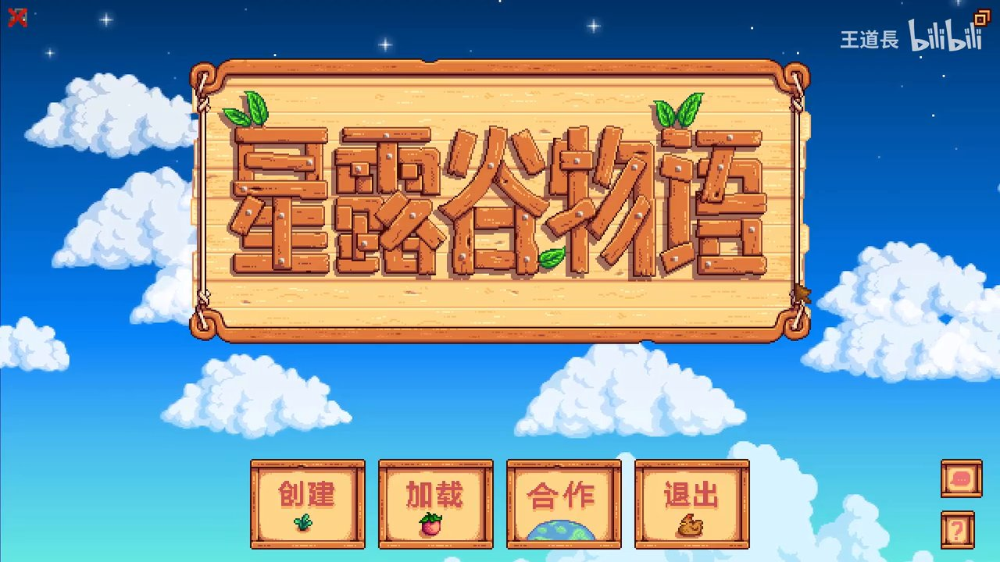
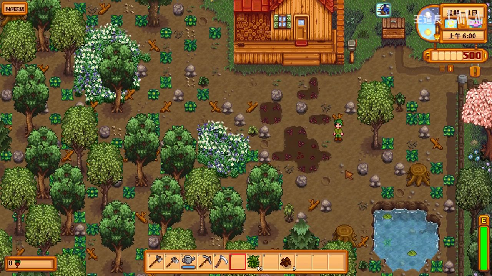
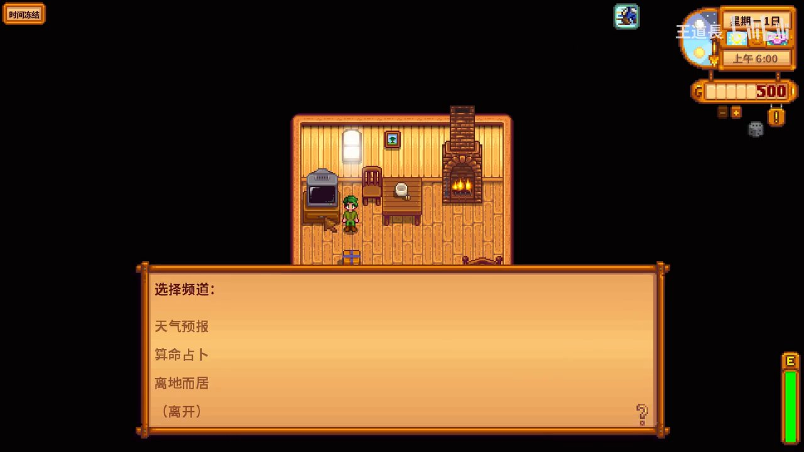

🏞️ 星露谷物语新手攻略：开局第一天全指南
参考视频：王道長「纯新手向攻略（第一期）——开局第一天」 · 244万播放
📋 本篇涵盖
- 开局前准备：角色创建与农场类型选择
- 第一天上午：起床、看电视、接任务
- 第一天下午：探索农场、拜访鹈鹕镇
- 第一天晚间：钓鱼、整理工具、存档策略
- 新手避坑清单
🎮 1. 开局前的关键选择
刚打开游戏，主菜单下有三个关键选择：

1.1 农场类型
星露谷有 7种农场布局，新手推荐：
| 农场类型 | 推荐度 | 理由 |
|---|---|---|
| 标准农场 | ⭐⭐⭐⭐⭐ | 最大种植面积，最适合新手熟悉游戏机制 |
| 河边农场 | ⭐⭐⭐ | 钓鱼方便但种地空间少 |
| 森林农场 | ⭐⭐⭐⭐ | 前期物资丰富（硬木/野草），喜欢采集可选 |
| 山顶农场 | ⭐⭐ | 地形崎岖，新手容易迷路 |
| 荒野农场 | ⭐⭐ | 晚上刷怪，新手压力大 |
| 四角农场 | ⭐⭐⭐⭐ | 联机或喜欢规整布局可选 |
| 海滩农场 | ⭐ | 不能放洒水器，极度不适合新手 |
💡 推荐：第一档玩 标准农场，熟悉后再换其他类型。
1.2 角色自定义
- 名字：随意，但建议用自己能记住的英文名（联机时方便）
- 宠物偏好：猫🐱 和狗🐶 只是外观区别，不影响游戏性
- 喜欢的事物：不影响游戏机制，只是NPC对话彩蛋
🏠 2. 第一天早上（6:00–8:00）

游戏从 春1日 早上6:00 开始。你站在爷爷留下的荒废农场上。
2.1 第一步：进屋看电视

进门前先按 E 打开工具栏，右键电视 可以收看：
| 频道 | 作用 | 建议 |
|---|---|---|
| 🌤️ 天气预报 | 查看明天的天气 | ✅ 每天必看 — 下雨天不用浇水，适合下矿 |
| 🔮 算命占卜 | 查看今日运气 | ✅ 每天必看 — 好运日适合下矿/钓鱼/开晶球 |
| 🍳 酱料女皇 | 学新菜谱（周日/周三重播） | 前期不太重要 |
| 🌙 离地而居 | 游戏小贴士 | 新手建议看几期 |
⚡ 第一天：春1日通常是晴天，运气中等偏上。看完电视后，时间才到6:10左右，有大把时间。
2.2 检查信箱 📬
出门后在房屋右侧的邮箱处拿到第一封信——市长刘易斯 欢迎你来到星露谷，并给了你 15个防风草种子 作为见面礼。
🌱 3. 第一天最重要的事
3.1 开垦农田
先别急着去镇上！第一天最重要的任务是 开垦土地并种下防风草：
- 清出空地：用斧头砍几棵树（获得木材），用镰刀割杂草
- 耕地：用锄头右键点击土地，开垦约 15格 即可（刚好种完送的种子）
- 播种：打开背包（E键），选中防风草种子，在耕好的地上右键
- 浇水：用水壶右键浇满每一格（水壶在池塘边右键可以灌水）
📝 第一天的体力管理：你有 270体力（绿色能量条）。砍树和锄地都会消耗体力。建议保留至少一半体力去钓鱼。
3.2 必做：拜访罗宾（木匠）
往地图右侧走 → 进入深山区域 → 找到 罗宾的木匠店（营业到下午5点）。
跟她说话可以获得重要信息，同时解锁 接取任务 功能。
🗺️ 4. 探索鹈鹕镇
沿农场的路一直往下走，你会进入鹈鹕镇。第一天建议至少认识这几个关键NPC：
| NPC | 位置 | 为何重要 |
|---|---|---|
| 皮埃尔 🏪 | 杂货店（镇上中央） | 买种子、卖作物的地方（营业到下午5点） |
| 罗宾 🪚 | 木匠店（山上） | 建建筑、升级工具、买家具 |
| 克林特 ⛏️ | 铁匠铺（镇东南） | 升级工具、开晶球 |
| 威利 🎣 | 鱼店（海滩） | 买鱼竿、鱼饵 |
| 乔迪 / 玛妮 | 各自家中 | 前期任务会用到 |
⚠️ 注意：大部分商店 下午5点关门！第一天主要是认路，不用急着买东西。
第一天路线推荐
农场 → 罗宾木匠店（看路） → 皮埃尔杂货店（卖作物换钱）
→ 海滩见威利（买训练鱼竿） → 回家种地 → 傍晚钓鱼
🎣 5. 傍晚：钓鱼开局
钓鱼是 星露谷前期最赚钱的活动。
5.1 怎么获得鱼竿
如果第一天不钓鱼，可以在春3日 威利给你邮寄 一根竹鱼竿。
要提前钓鱼： - 去海滩找威利花 50g 买竹鱼竿（或 25g 训练鱼竿——鱼更难跑） - 想钓鱼需要先挖一些 虫子（用锄头挖地里的蠕虫洞），合成鱼饵
5.2 第一天钓鱼收益
| 时间 | 地点 | 常见鱼 | 售价 |
|---|---|---|---|
| 6:00–19:00 | 山区湖 | 虹鳟鱼/鲈鱼 | 75g~100g |
| 全天 | 海滩 | 沙丁鱼 | 50g |
| 全天 | 镇旁河 | 鲈鱼 | 50g |
💡 新手钓鱼技巧：轻点鼠标控制进度条，不要一直按着。鱼动你才动，鱼停就松开让进度条回到中间。
⚔️ 6. 避坑清单（新手必看）
| ❌ 不要做的事 | ✅ 应该做的事 |
|---|---|
| ❌ 卖掉所有木材和石头 | ✅ 留下至少 50个木材 修桥（春3日任务） |
| ❌ 第一天就买很多种子 | ✅ 先防风草15个，赚钱后春2日补种 |
| ❌ 挥霍体力砍树 | ✅ 保留 100+体力 钓鱼/下矿 |
| ❌ 晚上12点后还在外面 | ✅ 凌晨2点前必须上床睡觉！ |
| ❌ 开垦超出播种能力的土地 | ✅ 第一天15格就够 |
| ❌ 把所有金币花光 | ✅ 至少要留 100g 以备不时之需 |
📊 第一天目标清单
- [x] 起床看电视（天气预报 + 算命）
- [x] 查看邮箱，拿到防风草种子
- [x] 开垦15格土地，种下防风草
- [x] 认识罗宾、皮埃尔等关键NPC
- [x] 保留足够体力钓鱼赚钱
- [x] 凌晨2点前回家睡觉
- [x] 保存游戏（睡觉自动存）
🎯 第一天小目标总结
目标：把15个防风草种下去 → 认识镇上几个关键NPC → 傍晚钓鱼攒第一桶金。
春2日预告： - 皮埃尔杂货店开门（买更多防风草种子） - 如果下雨 → 不用浇水 → 适合去矿洞 - 继续钓鱼攒钱 → 春5日之前目标是 攒够2000g买草莓种子
视频来源：B站 · 王道長 — 纯新手向攻略（第一期）——开局第一天
发布于 FarmingGames.Help — 种田游戏攻略一站式数据库